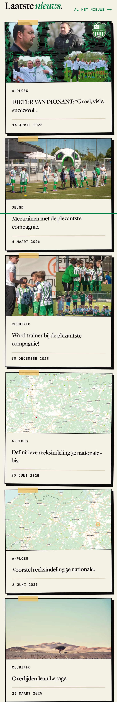
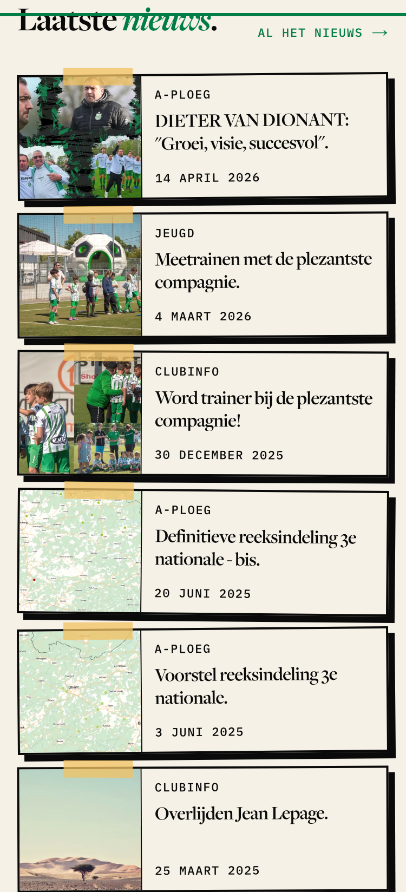
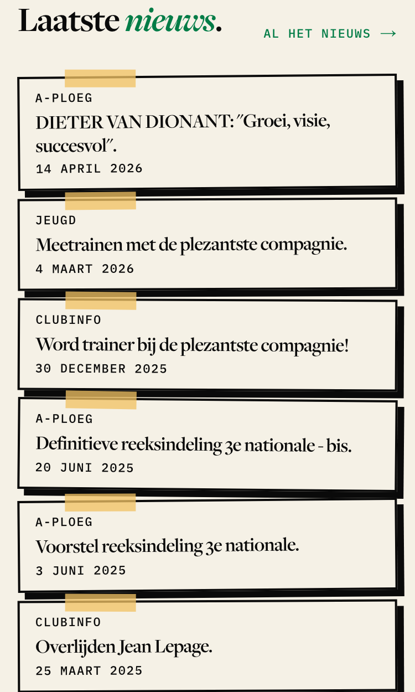
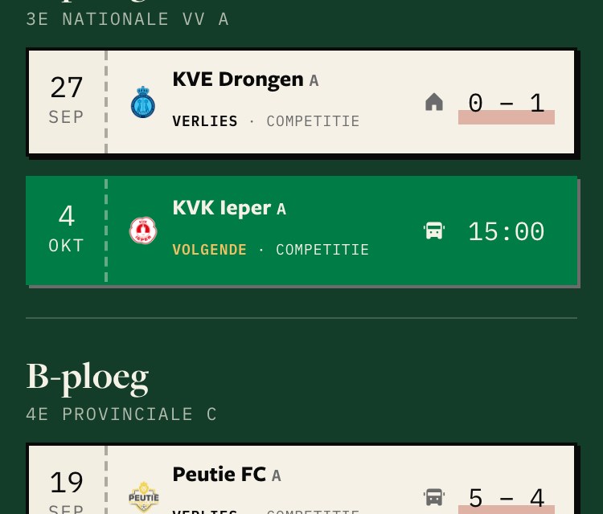
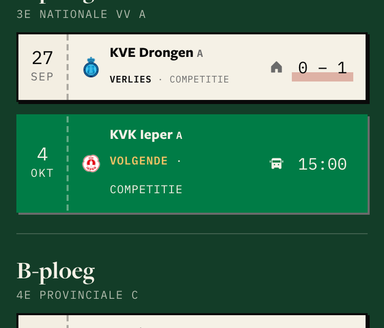
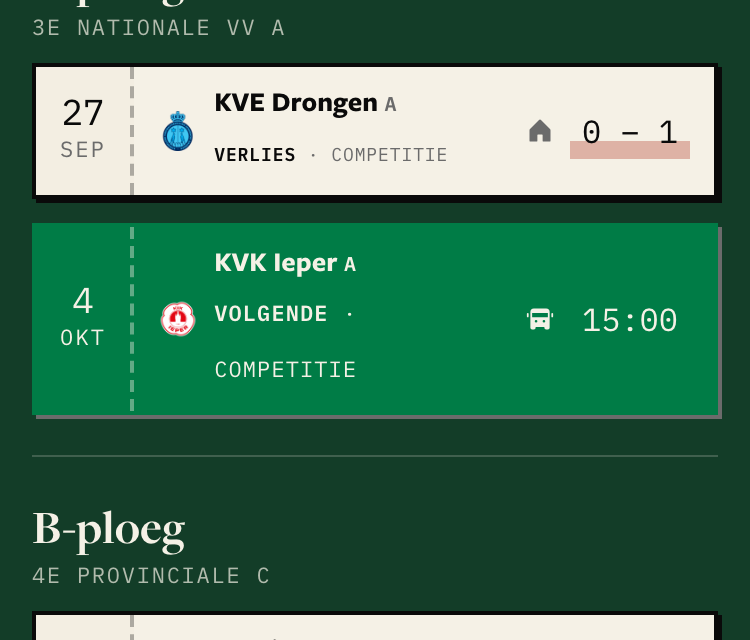
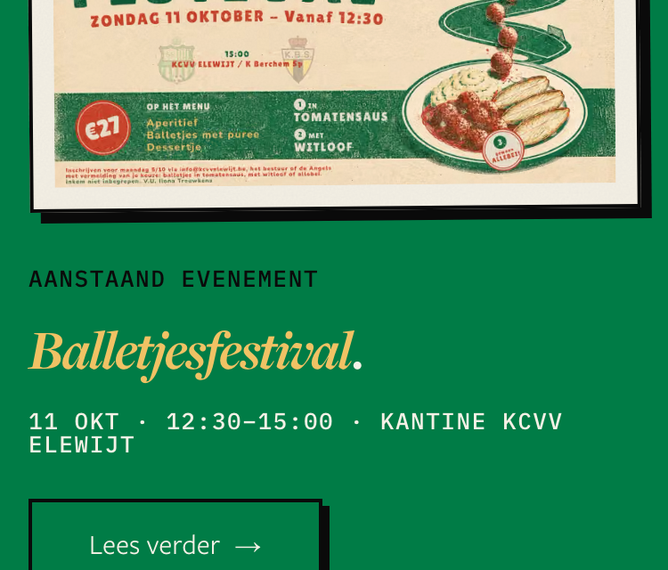
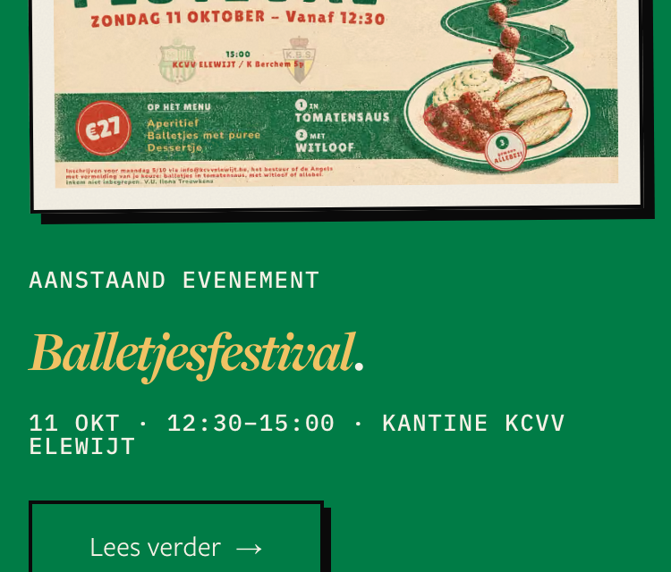
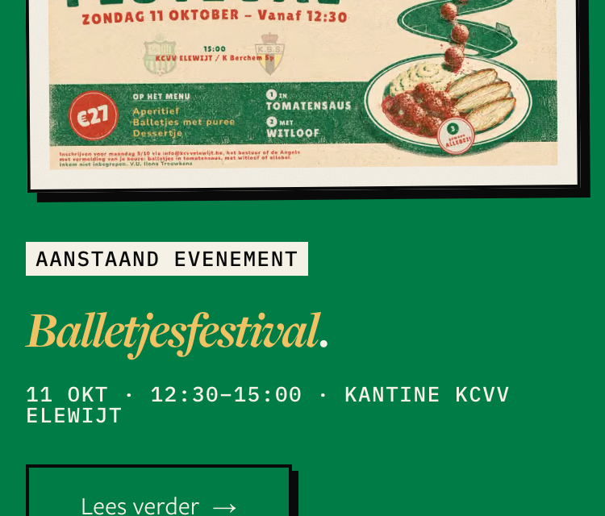

<title>Homepage Type and Length</title>
<link rel="stylesheet" href="https://fonts.googleapis.com/css2?family=IBM+Plex+Mono:wght@500;700&display=swap">
<style>
  :root{color-scheme:light;--bg:#f5f1e6;--paper:#fff9ee;--soft:#ede8da;--ink:#0a0a0a;--muted:#5b574d;--edge:#d9d2bf;--deep:#007c46;--deep-ink:#065f37}
  @media (prefers-color-scheme:dark){:root:not([data-theme="light"]){color-scheme:dark;--bg:#151512;--paper:#1e1d19;--soft:#26251f;--ink:#f1ede2;--muted:#b3ac9c;--edge:#3a382f;--deep:#3fbf7f;--deep-ink:#8fe0b4}}
  :root[data-theme="dark"]{color-scheme:dark;--bg:#151512;--paper:#1e1d19;--soft:#26251f;--ink:#f1ede2;--muted:#b3ac9c;--edge:#3a382f;--deep:#3fbf7f;--deep-ink:#8fe0b4}
  *{box-sizing:border-box} body{margin:0;background:var(--bg);color:var(--ink);font:15px/1.5 -apple-system,"Helvetica Neue",Arial,sans-serif}
  main{max-width:1240px;margin:0 auto;padding-block:32px 96px;padding-inline:16px}
  h1{font:700 32px/1.1 Georgia,"Times New Roman",serif;margin:0 0 8px;text-wrap:balance} h2{font:700 24px/1.2 Georgia,serif;margin:0 0 4px;text-wrap:balance}
  h3{font:700 14px/1.3 -apple-system,"Helvetica Neue",Arial,sans-serif;margin:0}
  .lede{max-width:70ch;color:var(--muted);margin:0 0 24px}
  table{border-collapse:collapse;width:100%;background:var(--paper);border:2px solid var(--ink);box-shadow:6px 6px 0 var(--ink);font-size:14px}
  th,td{text-align:left;padding:10px 12px;border-bottom:1px dashed var(--edge);vertical-align:top} th{font:700 11px/1.2 "IBM Plex Mono",ui-monospace,monospace;text-transform:uppercase;letter-spacing:.06em}
  td a{color:inherit} .tablewrap{overflow-x:auto;margin:0 0 40px}
  section{border:2px solid var(--ink);box-shadow:6px 6px 0 var(--ink);background:var(--paper);padding:20px;margin:0 0 40px}
  .where{margin:0 0 16px;color:var(--muted);max-width:70ch}
  .opts{display:flex;gap:16px;overflow-x:auto;padding-bottom:8px;align-items:flex-start}
  .opt{flex:0 0 360px;max-width:100%;border:1.5px solid var(--edge);background:var(--bg);padding:12px;display:flex;flex-direction:column;gap:8px}
  .opt.today{background:var(--soft)} .opt.suggested{border-color:var(--deep);box-shadow:4px 4px 0 var(--deep)}
  .opt header{display:flex;align-items:center;gap:8px}
  figure{margin:0;border:1px solid var(--edge);background:#fff;overflow:hidden} figure img{display:block;max-width:100%;height:auto}
  figure.tall{max-height:900px;overflow-y:auto}
  .chip{display:inline-block;font:700 11px/1 "IBM Plex Mono",ui-monospace,monospace;letter-spacing:.08em;text-transform:uppercase;padding:5px 7px;border:1.5px solid var(--ink);background:var(--paper);color:var(--ink)}
  .chip.pick{background:var(--deep);border-color:var(--deep);color:#fff} .chip.alt{background:var(--soft)}
  .note{margin:0;font-size:14px} .facts{margin:0;padding-left:18px;font-size:13px;color:var(--muted);font-variant-numeric:tabular-nums}
  .decide{margin:18px 0 0;padding:12px 14px;border:1.5px dashed var(--ink);background:var(--bg)}
  @media (max-width:700px){.opt{flex-basis:86vw}}
</style>
<main>
  <h1>Homepage small type and mobile length</h1>
  <p class="lede">Each screenshot is the <strong>live production homepage</strong> (kcvv-nextjs.vercel.app) at 375px wide, with the option injected as CSS. Page and band heights are measured in the browser. Contrast is only a tie-breaker: the club has no WCAG target (#2395). Captured 2026-09-28 for issue #3239.</p>
  <div class="tablewrap"><table><thead><tr><th>Question</th><th>Options</th><th>Suggested</th></tr></thead><tbody><tr><td><a href="#length">Laatste nieuws on a phone</a></td><td><span class="chip pick">A</span> Compact cards<br><span class="chip alt">B</span> Text rows</td><td><span class="chip pick">A</span> Keeps the photos (faces sell club news) and still saves about 1 400px. B saves 200px more but every row looks the same.</td></tr><tr><td><a href="#stub">“Volgende” in the Eerste ploegen band</a></td><td><span class="chip alt">A</span> 11px, same yellow<br><span class="chip pick">B</span> 11px, cream</td><td><span class="chip pick">B</span> Both sizes wrap to two lines, so the cost is the same. Legibility is judged by eye; the tie goes to contrast, and cream wins that (4.69 against 3.17).</td></tr><tr><td><a href="#kicker">“AANSTAAND EVENEMENT” kicker</a></td><td><span class="chip pick">A</span> Cream text<br><span class="chip alt">B</span> Ink on a cream label</td><td><span class="chip pick">A</span> A colour change only: no new element. B adds a label box that the site uses nowhere else yet.</td></tr></tbody></table></div>
  <section id="length"><h2>Laatste nieuws on a phone</h2><p class="where">The Laatste nieuws band below 640px. #3234 ruled out a cap or an age floor, so all six articles stay; only their shape changes.</p>
    <div class="opts"><article class="opt today ">
      <header><span class="chip ">now</span><h3>Today</h3></header>
      <figure class="tall"></figure>
      <p class="note">Six full cards, one per row, each ≈350px tall.</p>
      <ul class="facts"><li>Page height 10,612px.</li><li>Band height 2,229px.</li></ul>
    </article><article class="opt  suggested">
      <header><span class="chip pick">A</span><h3>Compact cards</h3></header>
      <figure class="tall"></figure>
      <p class="note">Same card, laid out sideways below 640px: a square photo on the left, kicker + title + date on the right. 'Lees verder' is hidden (the whole card is the link).</p>
      <ul class="facts"><li>Page height 9,206px (-1,406px).</li><li>Band height 823px (-1406px).</li></ul>
    </article><article class="opt  ">
      <header><span class="chip alt">B</span><h3>Text rows</h3></header>
      <figure class="tall"></figure>
      <p class="note">No photo below 640px: kicker, title and date in a bordered row. The photos stay on tablet and desktop.</p>
      <ul class="facts"><li>Page height 9,007px (-1,605px).</li><li>Band height 624px (-1605px).</li></ul>
    </article></div>
    <p class="decide"><span class="chip pick">suggested A</span> Keeps the photos (faces sell club news) and still saves about 1 400px. B saves 200px more but every row looks the same. <b>Your pick:</b> A / B / leave as is.</p></section><section id="stub"><h2>“Volgende” in the Eerste ploegen band</h2><p class="where">The fixture row in the Eerste ploegen band on its green match-day ground. The same row component (TeamAgendaRow) is used on team pages.</p>
    <div class="opts"><article class="opt today ">
      <header><span class="chip ">now</span><h3>Today</h3></header>
      <figure class=""></figure>
      <p class="note">9px, warm yellow on the green match-day ground.</p>
      <ul class="facts"><li>Page height 10,612px.</li><li>Band height 696px.</li><li>Text 9px, contrast 3.17:1.</li></ul>
    </article><article class="opt  ">
      <header><span class="chip alt">A</span><h3>11px, same yellow</h3></header>
      <figure class=""></figure>
      <p class="note">Two pixels bigger. Colour unchanged.</p>
      <ul class="facts"><li>Page height 10,668px (+56px).</li><li>Band height 752px (+56px).</li><li>Text 11px, contrast 3.17:1.</li></ul>
    </article><article class="opt  suggested">
      <header><span class="chip pick">B</span><h3>11px, cream</h3></header>
      <figure class=""></figure>
      <p class="note">Two pixels bigger, and cream like the team names beside it. The yellow accent is gone.</p>
      <ul class="facts"><li>Page height 10,668px (+56px).</li><li>Band height 752px (+56px).</li><li>Text 11px, contrast 4.69:1.</li></ul>
    </article></div>
    <p class="decide"><span class="chip pick">suggested B</span> Both sizes wrap to two lines, so the cost is the same. Legibility is judged by eye; the tie goes to contrast, and cream wins that (4.69 against 3.17). <b>Your pick:</b> A / B / leave as is.</p></section><section id="kicker"><h2>“AANSTAAND EVENEMENT” kicker</h2><p class="where">The label above the event title in the Aanstaand evenement band.</p>
    <div class="opts"><article class="opt today ">
      <header><span class="chip ">now</span><h3>Today</h3></header>
      <figure class=""></figure>
      <p class="note">13px, black ink on green.</p>
      <ul class="facts"><li>Page height 10,612px.</li><li>Band height 515px.</li><li>Text 13px, contrast 3.74:1.</li></ul>
    </article><article class="opt  suggested">
      <header><span class="chip pick">A</span><h3>Cream text</h3></header>
      <figure class=""></figure>
      <p class="note">Same size, cream instead of ink.</p>
      <ul class="facts"><li>Page height 10,612px (0px).</li><li>Band height 515px (0px).</li><li>Text 13px, contrast 4.69:1.</li></ul>
    </article><article class="opt  ">
      <header><span class="chip alt">B</span><h3>Ink on a cream label</h3></header>
      <figure class=""></figure>
      <p class="note">Ink stays, on a small cream label box, like a taped tag.</p>
      <ul class="facts"><li>Page height 10,620px (+8px).</li><li>Band height 523px (+8px).</li><li>Text 13px, contrast 17.54:1.</li></ul>
    </article></div>
    <p class="decide"><span class="chip pick">suggested A</span> A colour change only: no new element. B adds a label box that the site uses nowhere else yet. <b>Your pick:</b> A / B / leave as is.</p></section>
</main>